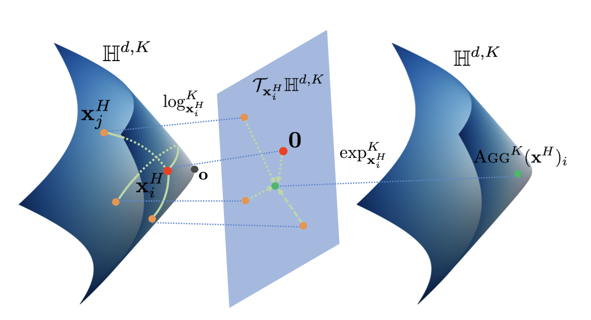
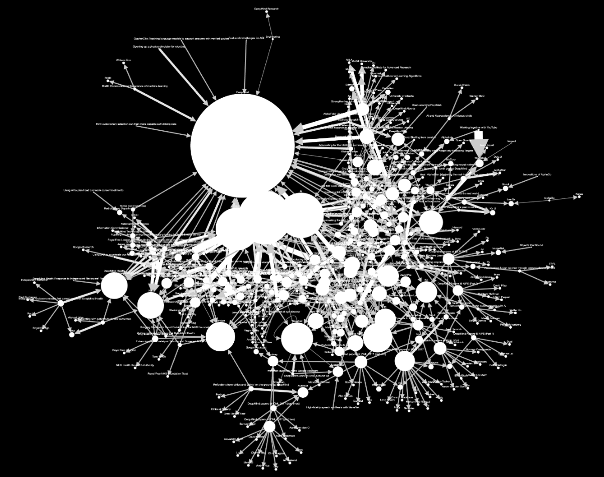
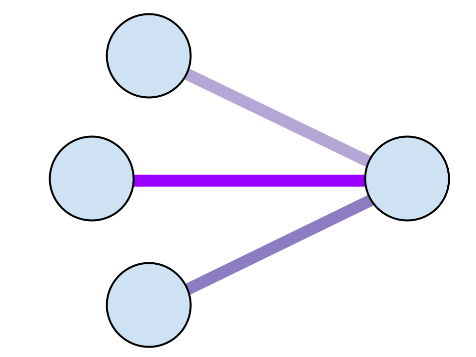
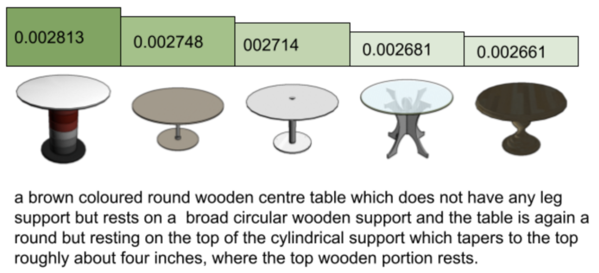
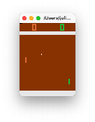
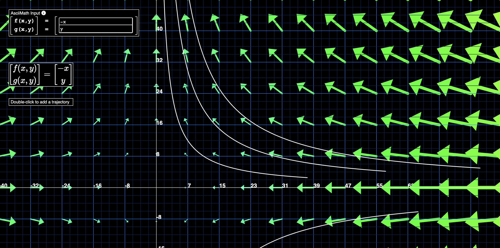
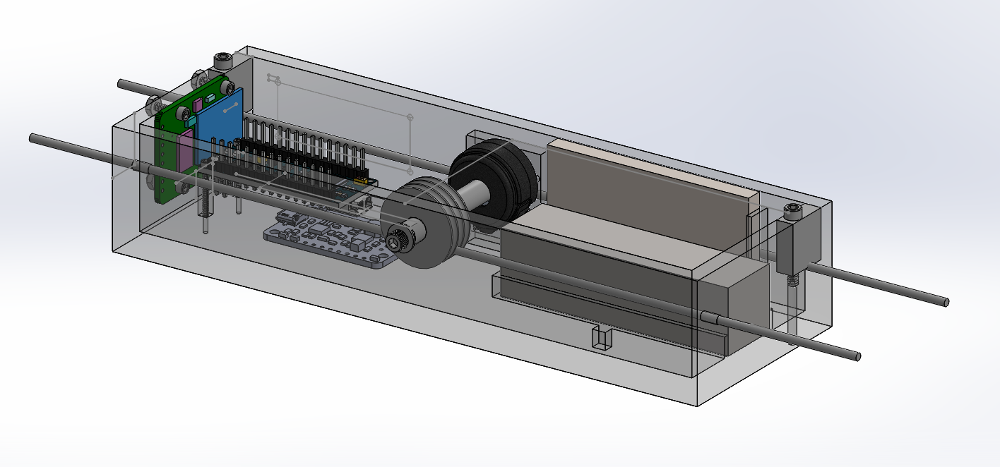

here are some things i've worked on!

HGCN efficiency: an adaptation of Hyperbolic GCN to PyTorch Geometric with significantly reduced training time thanks to vectorized manifold projections. i hope to continue work here, and one day make HGCN an official feature of PyTorch Geometric so more people can take advantage of its increased expressiveness over hierarchical graphs (e.g. tree structures)!

kgene: a BERT-powered knowledge graph generator. enter a URL of your choice, and this tool will scrape the site and extracts named entities from the text on each page. it shows you how each page is related to each other via the entities in common between them, and you get to see some neat community structures! i'm curious about how tools like this can help us find hidden connections within our thoughts and information across the Web.

GATE: an implementation of the Graph Attention Transformer Encoder in PyTorch Geometric, interpreted as a graph neural network. it's similar to the Graph Attention Network but with a different attention mechanism.

BIGCHAIR: CLIP, but 3D. a collaboration with my amazing friends Pino Cholsaipant and Sidney Hough. we used contrastive learning to retrieve colored 3D meshes from natural language descriptions!

policy gradient: an implementation of two simple reinforcement learning algorithms in NumPy. this agent learns to play pong!

vector fields: when i took differential equations, i was sad that these were the best online vector field plotters. so, i made my own. you can plot solution trajectories too!

magtrack: a device i made to characterize magnetic shielding in a vacuum tube during my time with the Hogan Lab. i also programmed a red pitaya to automate laser power regulation.
dot-buddy: an app that does a bunch of trigonometry to help drum and bugle corps march with accuracy. 1.4K+ downloads on the iOS App Store.